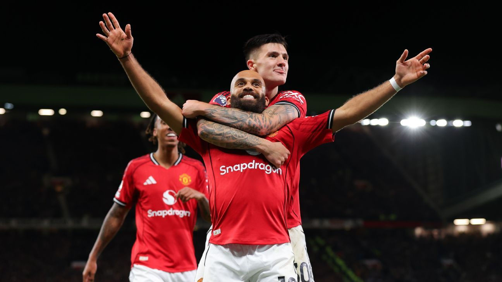
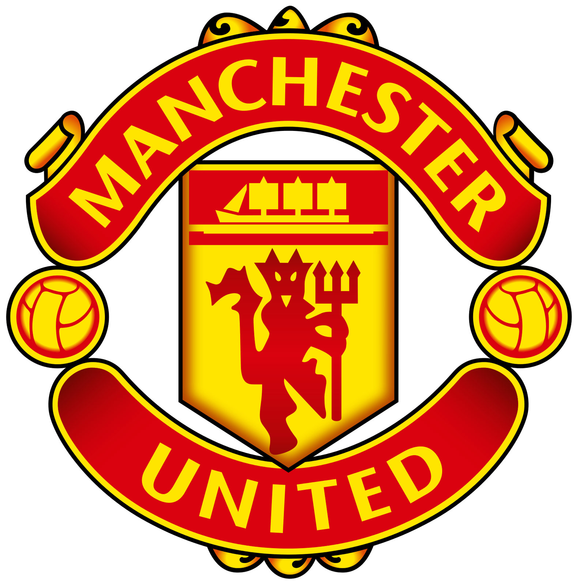
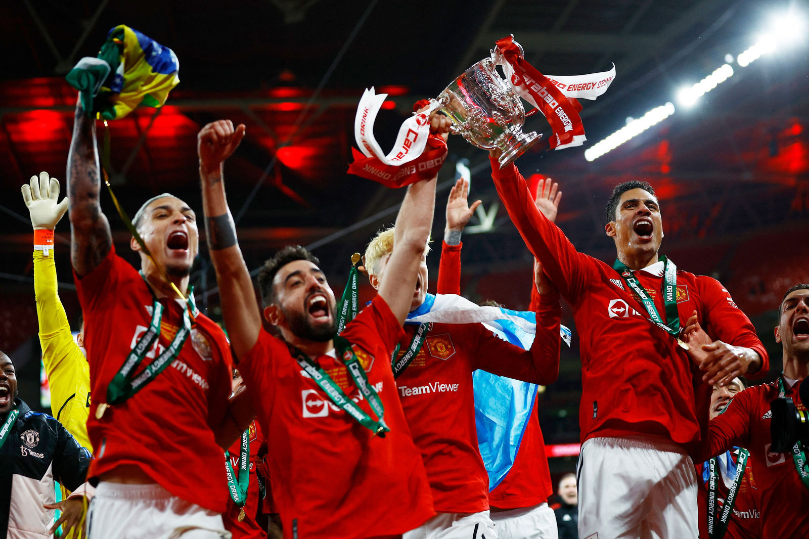

The Fall of Manchester United!

The English football world used to consider Manchester United as its top team but the club has lost its former glory. The European dominance of Sir Alex Ferguson's era has not returned since his departure in 2013 because the club has experienced poor leadership and have made wrong financial decisions and lost its way.
Managers
By far the best manager to ever be graced by Manchester United was Sir Alex Furgeson. He was appointed manager on November 6, 1986, and during his time with the club, he won a total of 38 trophies -- including 13 Premier League titles, the most ever won by a manager -- as well as 2 Champions League titles, 10 Community Shields, and 5 FA Cups. His achievements also earned him numerous individual honors, such as the IFFHS World's Best Coach of the 21st Century award in 2012. Furgeson was also named Premier League Manager of the Season 11 times. The club has experienced eight managerial changes since Ferguson left in 2013 but each new appointment failed to bring back the winning success of his time. The three managers who followed David Moyes at Manchester United - including José Mourinho and Ole Gunnar Solskjær - brought occasional hope but ultimately failed to restore the success of the Ferguson era. Many of the managers failed to succeed because they spent excessive funds without achieving the desired results. Fans grew disappointed with the team's poor standings, the lack of silverware, and ongoing disagreements within the dressing room among players, coaches, and staff.
Ahead of the 2013--14 season, David Moyes, in what would be his only year as manager, brought in one player from his former club, Belgian international Marouane Fellaini, for €32.4 million, and later signed World Cup winner Juan Mata in January for around €44.7 million. The next manager, for the 2014--15 and 2015--16 seasons, was Louis van Gaal, who lasted two years at the club. He led United to a 4th-place finish in his first season and a 5th-place finish in his second, securing European football and winning the FA Cup. During his tenure, Van Gaal signed several high-profile players, including Daley Blind for €17.5 million, Luke Shaw and Marcos Rojo in a joint deal worth €57.5 million, and Ángel Di María for €75 million. The following year, with a combined total of €96 million, he brought in Bastian Schweinsteiger, Matteo Darmian, Memphis Depay, Morgan Schneiderlin, and goalkeeper Sergio Romero on a free transfer, as well as Anthony Martial from Monaco for €60 million, who became the team's main goal scorer.
In the 2016--17 season, Manchester United appointed "The Special One," José Mourinho, as manager. That summer, he strengthened the squad by signing Eric Bailly from Villarreal and Henrikh Mkhitaryan from Borussia Dortmund for a combined fee of around €80 million. His major signing was Paul Pogba, who rejoined the club from Juventus for a then-world-record fee of €105 million. Mourinho also brought in Zlatan Ibrahimović on a free transfer from Paris Saint-Germain. During his first season, he led United to a Europa League title and a 6th-place finish in the Premier League. The following year, Mourinho added several key players to the squad, including Swedish international Victor Lindelöf, Premier League striker Romelu Lukaku, and midfielder Nemanja Matić from Chelsea, for a combined total of around €163 million. He also completed a swap deal with Arsenal, sending Henrikh Mkhitaryan in exchange for Alexis Sánchez. With these additions, Mourinho guided Manchester United to their highest league finish since Sir Alex Ferguson's retirement, placing 2nd--just behind Manchester City. Fans believed that José Mourinho would remain at the club for several more years, but he didn't even last until Christmas. Before his dismissal, however, he made two more signings: Brazilian midfielder Fred from Shakhtar Donetsk for €59 million and Portuguese fullback Diogo Dalot from Porto for €22 million. Later, it was revealed that "The Special One" had ongoing issues with a player over attitude and training performance -- that player being Paul Pogba. After a fallout with the manager and several off-field problems, José Mourinho was ultimately sacked later that season.
Between the 2018-19 to 2021-22 Ole Gunnar Solskjær was manager for United with him also having a successful career there. In his first year, he didn't make a signing but changed how United played the ball choosing a more counterattacking football. The following year, young winger Daniel James was signed for €17.8 million, while Aaron Wan-Bissaka joined the Red Devils from Crystal Palace for €55 million. Club captain Harry Maguire also arrived that summer for an astounding €87 million. These additions helped United secure a 3rd-place finish, highlighted by the arrival of what many consider Manchester United's best player today, Bruno Fernandes, who joined for €67 million. The following year, United came close once again, finishing 2nd in the league with their exciting counterattacking football. That season, they signed Donny van de Beek for €39 million, Amad Diallo from Serie A for €21.3 million, and veteran striker Edinson Cavani on a free transfer. In the 2021--22 season, the club continued its big-name signings by bringing in Jadon Sancho from Borussia Dortmund, adding even more attacking depth to the squad.
The Cause of the Downfall: Ownership
The Glazer family controls Manchester United as a global financial giant but supporters believe their ownership focuses on financial gains instead of fan passion. The club's increasing ticket costs and corporate influence and questionable player selection have created a growing distance between United supporters and their team. The legendary Old Trafford stadium now produces more angry sounds than triumphant cheers from its fans.The three Manchester clubs along with Arsenal have moved forward through their adoption of contemporary strategies and their strong leadership and organized team structures. United continues to implement short-term solutions by replacing managers and purchasing high-profile players while expecting unexpected success.
The 2025 season has started poorly for Manchester United which has led fans worldwide to wonder if the team will ever regain its former glory. The Red Devils must understand that past achievements do not guarantee future success because they need to develop clear direction and maintain stability and team unity.
Will Manchester United reclaim their crown as the Kings of England, or crumble under the weight of the Ultras' Expectations?


Filed under Soccer